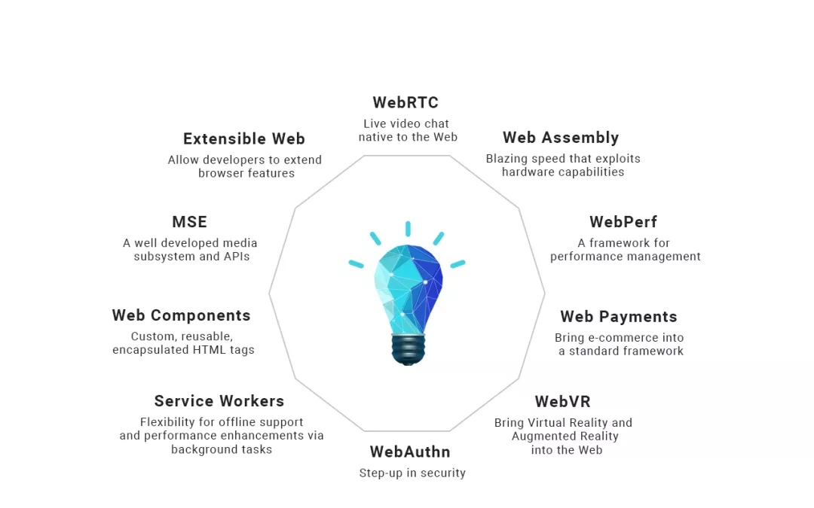
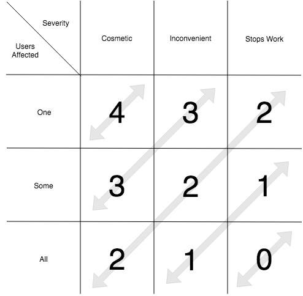
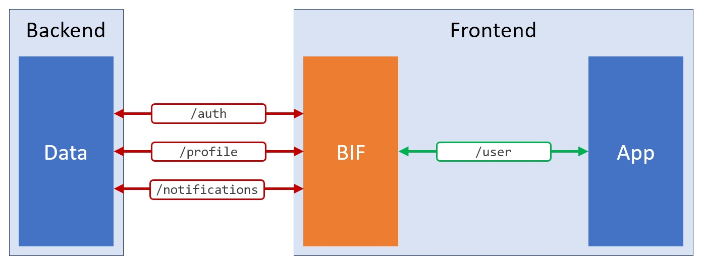
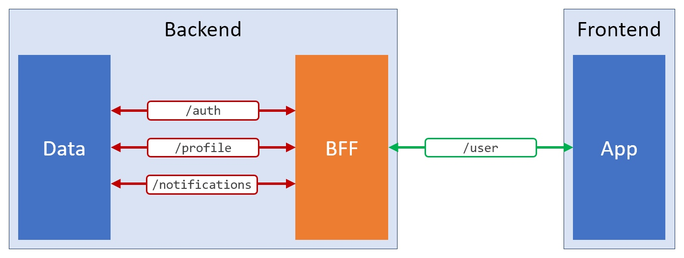

推荐阅读 2018.07
Week 1
1、ES6 的解构赋值前每次都创建一个对象吗？会加重 GC 的负担吗？
文章通过分析V8的字节码与内存分析发现，是会有一定的影响；另一个方面，一些代码中，V8的逃逸分析会自动优化中间对象。作者的结论是：不要做这种语法层面的微优化，引擎会去优化的，业务代码还是更加关注可读性和可维护性。
2、Using JavaScript modules on the web
文章介绍了浏览器支持的原生JavaScript模块功能，并且给出了一些优化建议
- 继续使用打包
- 使用细粒度模块
- 预加载模块
- 使用HTTP/2
在未来，计划支持将js模块提供给worklets，支持进行包名映射，支持浏览器的原生打包功能，以及Layered API。
3、CSS3 animation属性中的steps功能符深入介绍
一般来说，CSS动画是通过设置关键帧，然后根据缓动函数来创建补间动画。而有些动画是“非连续”的，steps()功能符就可以让动画不连续。
4、New CSS Features That Are Changing Web Design
一些新的CSS技术可以帮助写出更“酷”的页面。
通过CSS Grid进行网格布局；
通过clip-path来实现不规则的形状设计；
通过writing-mode来切换文本流。
5、引擎V8推出“并发标记”，可节省60%-70%的GC时间
V8 官方博客宣布 V8 引擎在 GC 技术上获得重大突破，这项技术名为“并发标记（ concurrent marking）”，在 GC 扫描和标记活动对象时，它允许 JavaScript 应用程序继续运行。测试显示，并发标记技术为主线程标记节省了 60％-70％的时间。并发标记是一个用新的平行和并发的 GC 替换旧的 GC 的项目，现在 Chrome 64 和 Node.js v10 已经默认启用并发标记。
6、揭开JS无埋点技术的神秘面纱
无埋点（Codeless Tracking）其实是一种免编写埋点代码技术。关键的技术点为以下两个：
- 操作可视化配置工具，保存配置
- SDK基础代码如何根据配置上报行为
通过监听页面所有行为进行上报，以唯一页面-唯一元素模式进行事件甄别，并提供可视化界面供PM、运营进行元素打点配置。文章就这一系列问题进行了简单介绍，并给出了部分相关资源。
- https://github.com/Autarc/optimal-select
- https://github.com/rowthan/whats-element
- https://www.zhihu.com/question/38000812
7、W3C近期要闻：W3C重点报告发布，综述2018年发展路线图
文章总结了未来一段时间W3C的工作重点。

8、WebAPKs on Android
目前android上的PWA可以在添加到桌面后自动生成一个WebAPK。应用将以APK的形式安装到手机上，它能够出现在用户的应用程序启动器和系统设置里，以及注册一系列intent filters。
9、华为快应用引擎技术架构详解
小程序方兴未艾，快应用有出现了。
10、Keeping Node.js Fast: Tools, Techniques, And Tips For Making High-Performance Node.js Servers
文章以一个简单的etag HTTP服务器为例，运用autocannon和clinic来作为profiling工具检测应用性能并产出报告结果，据此进行代码优化，最终提高200倍的性能。一次优化的过程为：profile --> generate flamegraph --> analyze --> debug --> optimize
Week 2
1、How you can improve your workflow using the JavaScript console
console对象上有很多方法帮助我们进行调试与开发。除了我们最常用的console.log，console对象上还有error、warn、info、group、table、count、time、timeEnd方法。
2、How to Lose an IT Job in 10 Minutes
作者从他的失败经验总结了白板面试的流程：
- spend some time analysing the requirements
- formulate questions if necessary and get answers
- pause and think of a direction to take (few min, don’t be afraid to stay silent for a while).
- propose initial solutions and get feedback from the interviewers
- pause again and choose a solution
- write pseudocode
- test my pseudocode
- finish by transforming the pseudocode into actual code
3、JavaScript async/await: The Good Part, Pitfalls and How to Use
在享受使用async/await所带来的优点的同时，也需要注意使用中的误区。最主要的是对异步执行顺序的控制；此外，错误处理可以使用try catch/return both value/use .catch这三种方式。
4、Here’s Why Mapping a Constructed Array in JavaScript Doesn’t Work
文章探究了为什么Array(100).map((_, i) => i)无法生成一个0到99的数组，以及如何用spread operation来修复它。
5、5 common practices that you can stop doing in React
- 避免过度优化，在必要时进行代码优化
- 对于多数搜索引擎，SSR已不是SEO的必要条件
- 考虑CSS in JS作为CSS使用方案
- 注意React中的条件判断使用方式
- 注意React中的闭包
6、How to Use Emojis as Icons
巧用box-shadow
7、如何优雅的选择字体(font-family)
字体选择、属性设置知多少
8、Optimize Website Speed With Chrome DevTools👍
对于前端开发而言，不论是调试还是性能分析，Chrome DevTools都是我们非常重要的帮手。本文以一个demo站点为例，介绍了如何使用Chrome DevTools来进行网页的性能优化，其中涉及到的部分较为全面，同时也提供了可以跟着练习的实例。
9、8 React conditional rendering methods
在React中使用的8种常见的条件渲染方式。根据文章内容归纳合并为以下5种：
- if/else (Prevent rendering with null/element variables)
- Ternary operator (三目运算)
- Short-circuit operator - && (短路操作)
- Immediately-Invoked Function Expressions - IIFE (立即执行函数)
- High Order Components - HOCs (高阶组件)
10、How to write async await without try-catch blocks in Javascript
借鉴go-lang的方式来进行async/await的错误处理。通过一个to函数来封装promise
// to.js
export default function to(promise) {
return promise.then(data => {
return [null, data];
})
.catch(err => [err]);
}
使得调用符合go-lang规范（在作者看来go-lang的方式更优雅）
let [err, user] = await to(UserModel.findById(1));
11、I discovered a browser bug
作者介绍了一个关于CORS的安全问题。在获取媒体文件中对部分数据进行302到外站后，就可以在js中读取到一些不在白名单中的响应头内容（firefox）。在edge中302后的跨域请求会带上cookie，甚至可以读取响应内容，这意味着会出现跨站用户相关接口的信息泄漏。
最后，作者还吐槽了给ms提bug的体验。
12、Web Caching Explained by Buying Milk at the Supermarket
以购买农场生产的牛奶为例，解释了缓存在Web中的应用。适合入门级了解服务端和客户端缓存。
13、The Problem You Solve Is More Important Than The Code You Write
时刻记住，你的工作不是编写代码，而是解决问题。不是所有问题都需要编码解决，不是所有问题都需要被立即修复，也不是所有工作都一定要有一个自动化工具。成本与收益，弄清你的目标才是核心。

14、Backend-in-the-frontend: a pattern for cleaner code
对于一些后端接口，如果有：
- 接口字段名称不是我们需要的
- 接口冗余信息过多
- 接口过于分散
- 接口数据格式不满足要求
- 接口字段值类型多变
- 你需要接口数据的排序
- ……
这些情况，可以考虑使用Backend-in-the-frontend (BIF)，在前端代码中抽象一层专用于数据请求、数据过滤、数据聚合与数据格式标准化。

对于这种问题，常用的方案还有：
- 修改后端接口
- 在后端添加BFE层（backend-for-the-frontend），例如常见的Node.js UI中间层

15、REST vs. GraphQL: A Critical Review
文章对比了Rest与GraphQL之间的差别，内容会比较抽象一些，而且评论区里，作者与另一名开发者展开了激烈的讨论。
Week 3
1、API Maturity
2、Node.js 异步异常的处理与domain模块解析
一个即将被废弃的Node模块 - domain。
除了同步try catch，node中有很多异步错误无法使用try catch。由于process.on("uncaughtException")的不友好，因此出现了domain模块，然而其在Node 6开始被标注为废弃。
Once a replacement API has been finalized, this module will be fully deprecated. —— nodejs.org